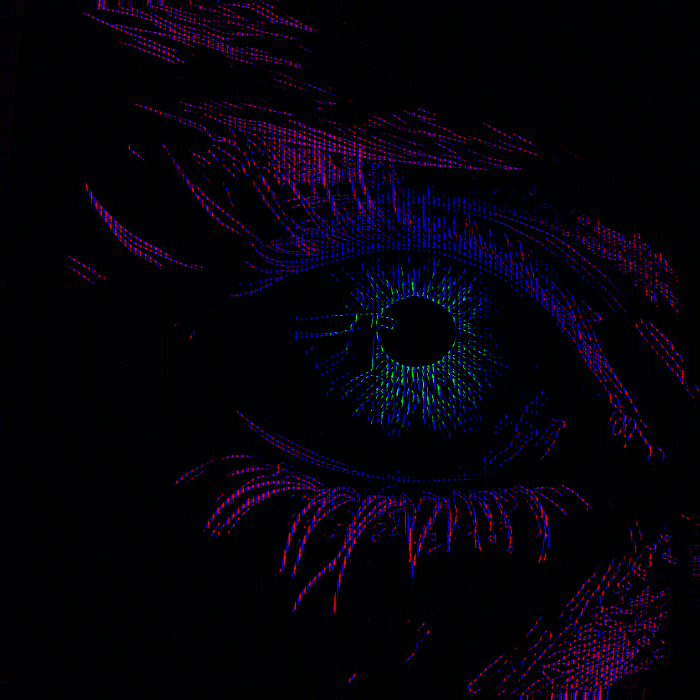
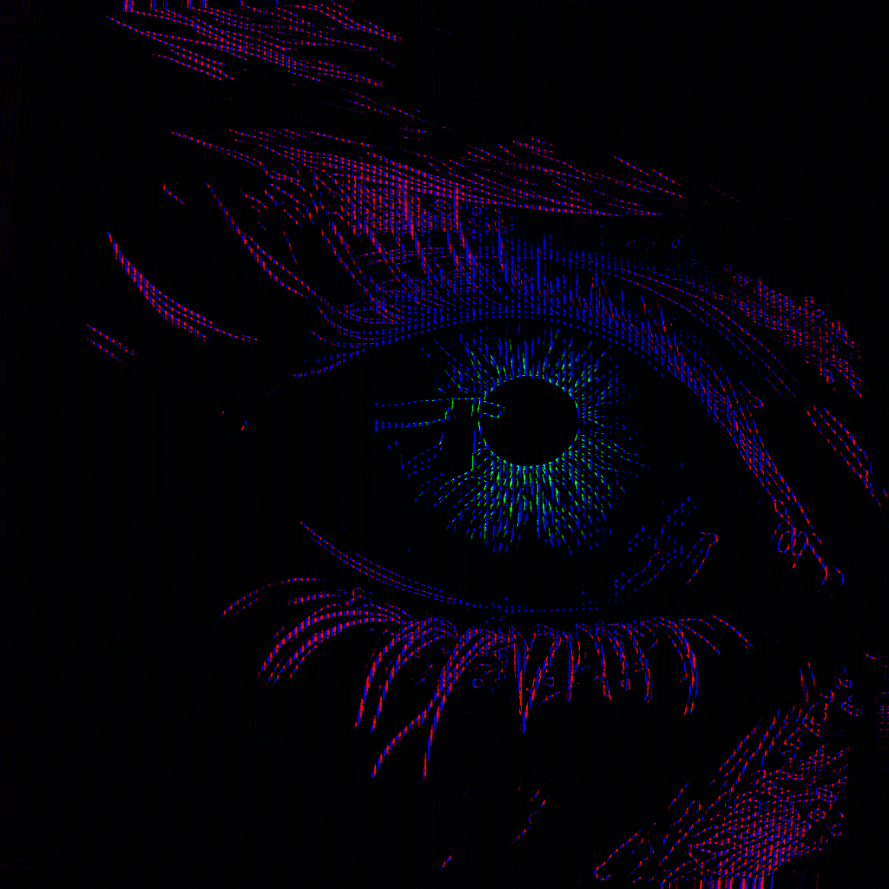

Who am I?
My name is Nymph. I'm a trans catgirl technomancer working in crypto but am also active in VR and AI. I'm a producer, rapper, and visual artist. I identify as a rhizomatic cartographer. What the fuck does that mean? Well, I am quite taken with the concept of the Rhizome from the post-modern philosophy of Deleuze and Guatarri. They present a framework in opposition to "aboristic" (tree-like) frameworks that instead resemble the rhizome underground that grows in any direction and has no real central point or hierarchy. Only connections between small nodes that feed energy to each other. This is in line with what I have gleaned from chaos and complexity in systems theory. Everything is connected in unpredictable ways so everything is relevant. Deleuze spoke of "mapping", by which he meant exploring new territories created by unique multiplicities and helping to bring to light the connections that can be drawn from there.
Thus, I am a rhizomatic cartographer. I spend my spare time that isn't used on creating music and art learning about anything and everything. I spend my days with papers, podcasts, youtube videos, and audiobooks on everything. Physics, engineering, AI, philosophy, religion, history, psychology, I mean it when I say everything. I do this in an effort to bring perspective to my art and to see what I think the future will look like. Being a part of building it is important to me, as well as helping others to see what parts of it they want to build. I hope to communicate this through my art, writing, and by generally talking about what I have passion for.
What do I do?
Professionally I'm an engineer at Search on Dora, where we build a multichain search engine. I have been fairly quiet about working in crypto for a while but I do firmly believe that there is a lot that blockchain based applications can do to change the power dynamics of a digital world. That won't happen in a fragmented world where the UX requires the user to keep track of every chain, their explorer, contract addresses for protocols, frontend URLs, etc. We aim to fix that. We've come a long way and I'm genuinely proud of our site, but also we're just getting started and I'm very excited to continue building it into a portal for for users, artists, and researchers.
I make music with Ableton, a Push 2, and Arturia midi controllers. I write my own lyrics and rap/sing over the beats I make. I'm starting to use Stable Audio but I've wanted to take my time with figuring out how to fit it into my workflow and compare it to the traditional methods that I know and love as well as learn more about traditional production itself so I could see the connections better.
I make visual art with ComfyUI, Pixel Composer, Krita, Blender, and Touch Designer. Sometimes I even paint! I really got back into it visual art so that I could make visuals for the music, so these will often intersect. I also dream of creating narrative animations with my own scoring, story telling has been around longer than writing and I want to understand how to use it to convey my messages more effectively.
Why care?
I ask myself this question as much as I ask it to you. Why should you care about me and what I have to say? It seems like a fundamentally egotistical endeavor to share my thoughts and experiences with the world like they will gain something from it. What I gain from it is that in giving them form I am forced to more methodically think through things than I do otherwise and that I am able to gain purpose and fulfillment through those who connect with what I'm saying and doing.
What do you gain from it? Well, as many of my core beliefs are based around chaos and complexity I always come back to the unpredictability and the interconnectedness of all things. Part of what this means is that the duality of self and context is so important that nobody can really give you advice except for you. However, it also means that there are unpredictable connections between my self and context and yours. My path isn't yours, but if there's high vector similarity beween us it's likely that you can find helpful ways to forge your path. Thus, it feels like my duty to share my context with you.
My Music
Visual Art:


 

Who inspires my work?
I am but a prism directing a combination of the light of those in my lightcone, so I have been inspired by many, many artists. Here I'm going to largely focus on those that have been key to my growth. Over time I will update this with some links to my favorites of each.
Musicians:
Brakence, Deko, Yameii Online, Heylog, 100 Gecs
Tyler the Creator, JPEGMAFIA, Mac Miller, Benny the Butcher
Kendrick Lamar, Earl Sweatshirt, MIKE, The Alchemist
TOKYOPILL, Cynthoni, Aphex Twin, Flume
Visual Artists:
photonisdead, Deko/Oseanworld, PurzBeats, celestialmaze, Machine Delusions, cersperse,
olegchomp, Empress Trash, Minimal Macbeth, Valeforic
countless mangaka and cartoon artists,